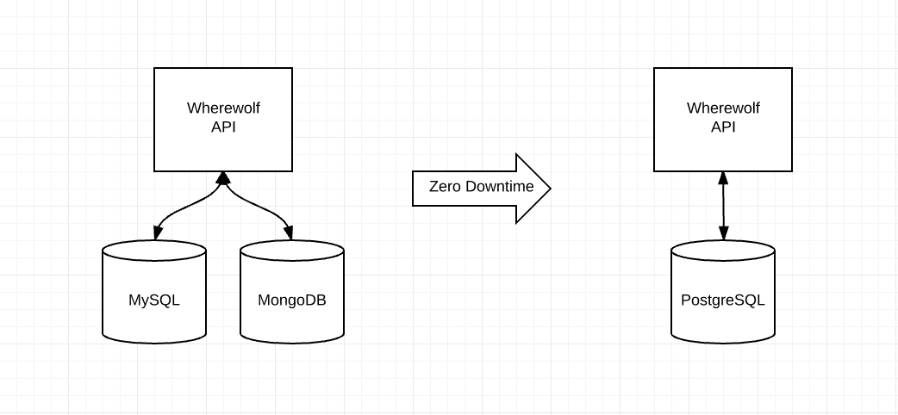

Mongo & MySQL ⇒ PostgreSQL

What are databases?
Different technologies
have
different strengths
MySQL
Low barrier to entry
LAMP
A lot of blog posts for n00bs who don't RTFM
"Tries" to follow ANSI SQL
Very forgiving aka "good enough for most"
MongoDB
Schemaless NoSQL
Max doc size: 16Mb
JS-esque query language
No joins
No transactions
Locks everywhere
Biggest advertising budget of NoSQL DBs
PostgreSQL
Setup involves more
Slower read performance
MVCC, Copy-on-Write & vacuuming
TOAST compression
Max row size: 1.6TB
Max field size: 1GB
Strict - NOT NULL - JSON
ACID, Multiple Triggers, Stored Procedures, Query Planner, etc...
Wherewolf moves
with zero downtime

Result
- 30% reduction of Time-In-Database
- 45% reduction in disk usage
- 50% reduction in number of databases to manage